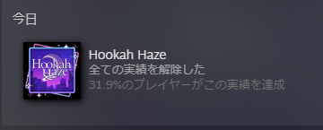

こんにちは、ザクザク食感です。
Hookah Hazeをクリアした！

ずっと楽しみにしていたゲームなので、ネタバレされる前にやっちゃおうと思ったら発売日にクリアしてしまった……（だいたい8時間くらいかかったのでボリュームが少ないわけではない）
新鮮なうちに感想を残しておきます。この先ネタバレを含みます！！！！！
・
・
・
・
・
・
・
・
・
・
全体の感想
死ぬのが確定しているのに友達をつくるっていうこと自体が悲しい（誰しも長い目で見ればそうだけど）
Offering Smoke（あむのHappy End）
自分が一番！みたいなタイプでありながら優しさも兼ね備えていて、すごくいい子……

っておい！！！トオル死んじゃってるじゃん！！！！！
エンディングを見た後Steamで解放された実績を確認したらどうやらこれがHappy Endだということがわかって、じゃあバッドエンドはどうなるんだよ！！！と思った。
Reck less（あむのBad End）
その選択をした時点で二度とお店に来てくれなくなって、他の子のルートが全く頭に入ってこなくなった；；

Special Fan（くるみのHappy End）

Inside（くるみのBad End）

生きる希望がない人が誰かと関わるっていうエゴにも繋がってくる気がして苦しい
Forgiveness（こころのHappy End）
処世術として積極的にコミュニケーションを取るタイプな分、パニックになっているときが見ていて苦しい……
なぜかシンエヴァの最後でシンジがマリとくっつくことを思い出した
Loss（こころのBad End）
自分を責める原因を増やすことになってしまってめっちゃいやだった……
最終的にこころはトオルとのことをすべて忘れてしまって、それがおばあちゃんと重なってしまう構造がグロすぎる
Over the Haze（True End）
「狂気より愛をこめて」みたいに何しても報われないのか……と思ったらTrueルートが出てきて安心した！！！心に穴が開いたまま終わりそうだったから本当に安心した。
全然すんなり話が進まないのがトオルの葛藤を表現していてよかった。
エンドロールが終わるまでどうなったかわからない演出もよかったし、最高の終わり方だった。
本当に良いゲームだった……出会ってすぐのキャラ同士の会話のギスギス感とか、SNSの使い方とかもすごくリアルで、めちゃめちゃ面白いです。
僕も久々にシーシャバーに行きたくなった 秋葉原のシーシャバー探そうかな
このゲームを遊べる環境がある人は絶対に遊んでください！！！超おすすめです！！！！！
それでは、さようなら。